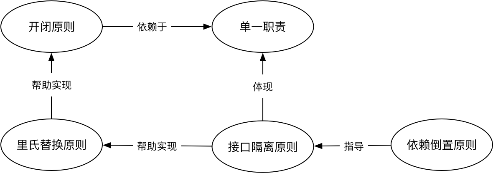
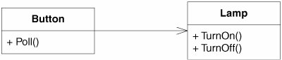
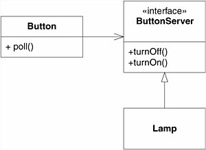

尽管大家都认为SOLID是非常重要的设计原则，并且对每一条原则都耳熟能详，但我发现大部分开发者并没有真正理解。要获得最大收益，就必须理解它们之间的关系，并综合应用所有这些原则。只有把SOLID作为一个整体，才可能构建出坚实(Solid)的软件。遗憾的是，我们看到的书籍和文章都在罗列每个原则，没有把它们作为一个整体来看，甚至提出SOLID原则的Bob大叔也没能讲透彻。因此我尝试介绍一下我的理解。
先抛出我的观点: 单一职责是所有设计原则的基础，开闭原则是设计的终极目标。里氏替换原则强调的是子类替换父类后程序运行时的正确性，它用来帮助实现开闭原则。而接口隔离原则用来帮助实现里氏替换原则，同时它也体现了单一职责。依赖倒置原则是过程式编程与OO编程的分水岭，同时它也被用来指导接口隔离原则。关系如下图：

单一职责原则(Single Responsibility Principle)
单一职责是最容易理解的设计原则，但也是被违反得最多的设计原则之一。
要真正理解并正确运用单一职责原则，并没有那么容易。单一职责就跟“盐少许”一样，不好把握。Robert C. Martin（又名“Bob大叔”）把职责定义为变化原因，将单一职责描述为 ”A class should have only one reason to change." 也就是说，如果有多种变化原因导致一个类要修改，那么这个类就违反了单一职责原则。那么问题来了，什么是“变化原因”呢？
利益相关者角色是一个重要的变化原因，不同的角色会有不同的需求，从而产生不同的变化原因。作为居民，家用的电线是普通的220V电线，而对电网建设者，使用的是高压电线。用一个Wire类同时服务于两类角色，通常意味着坏味道。
变更频率是另一个值得考虑的变化原因。即使对同一类角色，需求变更的频率也会存在差异。最典型的例子是业务处理的需求比较稳定，而业务展示的需求更容易发生变更，毕竟人总是喜新厌旧的。因此这两类需求通常要在不同的类中实现。
单一职责原则某种程度上说是在分离关注点。分离不同角色的关注点，分离不同时间的关注点。
在实践中，怎么运用单一职责原则呢？什么时候要拆分，什么时候要合并？我们看看新厨师在学炒菜时，是如何掌握“盐少许”的。他会不断地品尝，直到味道刚好为止。写代码也一样，你需要识别需求变化的信号，不断“品尝”你的代码，当“味道”不够好时，持续重构，直到“味道”刚刚好。
开闭原则(Open-closed Principle)
开闭原则指软件实体（类、模块等）应当对扩展开放，对修改闭合。这听起来似乎很不合理，不能修改，只能扩展？那我怎么写代码？
我们先看看为什么要有开闭原则。假设你是一名成功的开源类库作者，很多开发者使用你的类库。如果某天你要扩展功能，只能通过修改某些代码完成，结果导致类库的使用者都需要修改代码。更可怕的是，他们被迫修改了代码后，又可能造成别的依赖者也被迫修改代码。这种场景绝对是一场灾难。
如果你的设计是满足开闭原则的，那就完全是另一种场景。你可以通过扩展，而不是修改来改变软件的行为，将对依赖方的影响降到最低。
这不正是设计的终极目标吗？解耦、高内聚、低耦合等等设计原则最终不都是为了这个目标吗？畅想一下，类、模块、服务都不需要修改，而是通过扩展就能够改变其行为。就像计算机一样，组件可以轻松扩展。硬盘太小？直接换个大的，显示器不够大的？来个8K的怎么样？
什么时候应该应用开闭原则，怎么做到呢？没有人能够在一开始就识别出所有扩展点，也不可能在所有地方都预留出扩展点，这么做的成本是不可接受的。因此一定是由需求变化驱动。如果你有领域专家的支持，他可以帮你识别出变化点。否则，你应该在变化发生时来做决策，因为在没有任何依据时做过多预先设计违反了Yagni。
实现开闭原则的关键是抽象。在Bertrand Meyer提出开闭原则的年代（上世纪80年代），在类库中增加属性或方法，都不可避免地要修改依赖此类库的代码。这显然导致软件很难维护，因此他强调的是要允许通过继承来扩展类。随着技术发展，我们有了更多的方法来实现开闭原则，包括接口、抽象类、策略模式等。
我们也许永远都无法完全做到开闭原则，但不妨碍它是设计的终极目标。SOLID的其它原则都直接或间接为开闭原则服务，例如接下来要介绍的里氏替换原则。
里氏替换原则 (The Liskov Substitution Principle)
里氏替换原则说的是派生类（子类）对象能够替换其基类（父类）对象被使用。学过OO的同学都知道，子类本来就可以替换父类，为什么还要里氏替换原则呢？这里强调的不是编译错误，而是程序运行时的正确性。
程序运行的正确性通常可以分为两类。一类是不能出现运行时异常，最典型的是UnsupportedOperationException，也就是子类不支持父类的方法。第二类是业务的正确性，这取决于业务上下文。
下例中，由于java.sql.Date不支持父类的toInstance方法，当父类被它替换时，程序无法正常运行，破坏了父类与调用方的契约，因此违反了里氏替换原则。
package java.sql;
public class Date extends java.util.Date {
@Override
public Instant toInstant() {
throw new java.lang.UnsupportedOperationException();
}
}
接下来我们看破坏业务正确性的例子，最典型的例子就是Bob大叔在《敏捷软件开发：原则、模式与实践》中讲到的正方形继承矩形的例子了。从一般意义来看，正方形是一种矩形，但这种继承关系破坏了业务的正确性。
public class Rectangle {
double width;
double height;
public double area() {
return width * height;
}
}
public class Square extends Rectangle {
public void setWidth(double width) {
this.width = width;
this.height = width;
}
public void setHeight(double height) {
this.height = width;
this.width = width;
}
}
public void testArea(Rectangle r) {
r.setWidth(5);
r.setHeight(4);
assert(r.area() == 20); //! 如果r是一个正方形，则面积为16
}
代码中testArea方法的参数如果是正方形，则面积是16，而不是期望的20，所以结果显然不正确了。
如果你的设计满足里氏替换原则，那么子类（或接口的实现类）就可以保证正确性的前提下替换父类（或接口），改变系统的行为，从而实现扩展。BranchByAbstraction和绞杀者模式 都是基于里氏替换原则，实现系统扩展和演进。这也就是对修改封闭，对扩展开放，因此里氏替换原则是实现开闭原则的一种解决方案。
而为了达成里氏替换原则，你需要接口隔离原则。
接口隔离原则 (Interface Segregation Principle)
接口隔离原则说的是客户端不应该被迫依赖于它不使用的方法。简单来说就是更小和更具体的瘦接口比庞大臃肿的胖接口好。
胖接口的职责过多，很容易违反单一职责原则，也会导致实现类不得不抛出UnsupportedOperationException这样的异常，违反里氏替换原则。因此，应该将接口设计得更瘦。
怎么给接口减肥呢？接口之所以存在，是为了解耦。开发者常常有一个错误的认知，以为是实现类需要接口。其实是消费者需要接口，实现类只是提供服务，因此应该由消费者（客户端）来定义接口。理解了这一点，才能正确地站在消费者的角度定义Role interface，而不是从实现类中提取Header Interface。
什么是Role interface? 举个例子，砖头(Brick)可以被建筑工人用来盖房子，也可以被用来正当防卫：
public class Brick {
private int length;
private int width;
private int height;
private int weight;
public void build() {
//...包工队盖房
}
public void defense() {
//...正当防卫
}
}
如果直接提取以下接口，这就是Header Interface：
public interface BrickInterface {
void buildHouse();
void defense();
}
普通大众需要的是可以防卫的武器，并不需要用砖盖房子。当普通大众(Person)被迫依赖了自己不需要的接口方法时，就违反接口隔离原则。正确的做法是站在消费者的角度，抽象出Role interface:
public interface BuildHouse {
void build();
}
public interface StrickCompetence {
void defense();
}
public class Brick implement BuildHouse, StrickCompetence {
}
有了Role interface，作为消费者的普通大众和建筑工人就可以分别消费自己的接口：
//Worker.java
brick.build();
//Person.java
brick.strike();
接口隔离原则本质上也是单一职责原则的体现，同时它也服务于里氏替换原则。而接下来介绍的依赖倒置原则可以用来指导接口隔离原则的实现。
依赖倒置原则 (Dependence Inversion Principle)
依赖倒置原则说的是高层模块不应该依赖底层模块，两者都应该依赖其抽象。
这个原则其实是在指导如何实现接口隔离原则，也就是前文提到的，高层的消费者不应该依赖于具体实现，应该由消费者定义并依赖于Role interface，底层的具体实现也依赖于Role interface，因为它要实现此接口。
依赖倒置原则是区分过程式编程和面向对象编程的分水岭。过程式编程的依赖没有倒置，A Simple DIP Example | Agile Principles, Patterns, and Practices in C#这篇文章以开关和灯的例子很好地说明了这一点。

上图的关系中，当Button直接调用灯的开和关时，Button就依赖于灯了。其代码完全是过程式编程：
public class Button {
private Lamp lamp;
public void Poll() {
if (/*some condition*/)
lamp.TurnOn();
}
}
如果Button还想控制电视机，微波炉怎么办？应对这种变化的办法就是抽象，抽象出Role interface ButtonServer:

不管是电灯，还是电视机，只要实现了ButtonServer，Button都可以控制。这是面向对象的编程方式。
总结
总的来说，单独应用SOLID的某一个原则并不能让收益最大化。应该把它作为一个整体来理解和应用，从而更好地指导你的软件设计。单一职责是所有设计原则的基础，开闭原则是设计的终极目标。里氏替换原则强调的是子类替换父类后程序运行时的正确性，它用来帮助实现开闭原则。而接口隔离原则用来帮助实现里氏替换原则，同时它也体现了单一职责。依赖倒置原则是过程式编程与OO编程的分水岭，同时它也被用来指导接口隔离原则。